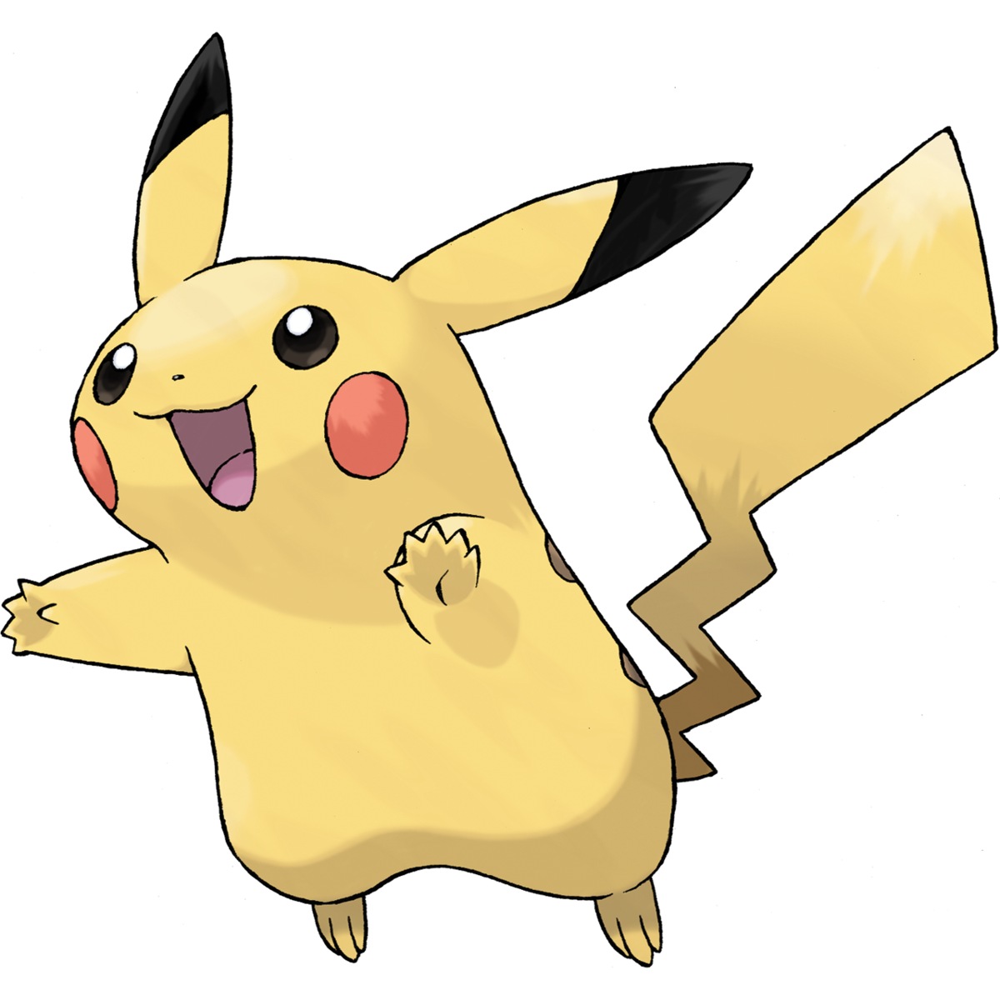

Bulbasaur
Bulbasaur
Bulbasaur is a small, quadruped Pokemon that has blue-green skin with darker patches. It has red eyes with white pupils, pointed, ear-like structures on top of its head, and a short, blunt snout with a wide mouth. A pair of small, pointed teeth are visible in the upper jaw when its mouth is open. Each of its thick legs ends with three sharp claws. On its back is a green plant bulb, which is grown from a seed planted there at birth. The bulb provides it with energy through photosynthesis as well as from the nutrient-rich seeds contained within.
 Charmander
Charmander
Charmander is a bipedal, reptilian Pokemon with a primarily orange body and blue eyes. Its underside from the chest down and the soles of its feet are cream-colored. It has two small fangs visible in its upper jaw and two smaller fangs in its lower jaw. A fire burns at the tip of this Pokemon's slender tail and has blazed there since Charmander's birth. The flame can be used as an indication of Charmander's health and mood, burning brightly when the Pokemon is strong, weakly when it is exhausted, wavering when it is happy, and blazing when it is enraged. It is said that Charmander dies if its flame goes out. However, if the Pokemon is healthy, the flame will continue to burn even if it gets a bit wet and is said to steam in the rain.
 Squirtle
Squirtle
Squirtle is a small Pokemon that resembles a light blue turtle. While it typically walks on its two short legs, it has been shown to run on all fours in Super Smash Bros. Brawl. It has large, purplish or reddish eyes and a slightly hooked upper lip. Each of its hands and feet have three pointed digits. The end of its long tail curls inward. Its body is encased by a tough shell that forms and hardens after birth. This shell is brown on the top, pale yellow on the bottom, and has a thick white ridge between the two halves.

Pikachu
Pikachu is a short, chubby rodent Pokemon. It is covered in yellow fur with two horizontal brown stripes on its back. It has a small mouth, long, pointed ears with black tips, and brown eyes. Each cheek is a red circle that contains a pouch for electricity storage. It has short forearms with five fingers on each paw, and its feet each have three toes. At the base of its lightning bolt-shaped tail is a patch of brown fur. A female will have a V-shaped notch at the end of its tail, which looks like the top of a heart. It is classified as a quadruped, but it has been known to stand and walk on its hind legs.
 Vulpix
Vulpix
Vulpix is a small, quadruped, fox-like Pokemon. It has red-brown pelt with a cream-colored underbelly. It has brown eyes, large, pointed ears with dark brown insides, and a triangular dark brown nose. Its paws are slightly darker than the rest of its pelt and have light brown paw pads. On top of its head are three curled locks of orange fur with bangs, and it has orange tails with curled tips. It is most commonly seen with six tails. However, Vulpix is born with only a single, white tail that splits as Vulpix grows. The tails grow hot as it approaches evolution.